GI‑ECR‑24DC
Our own 24 V DC controller for the DIN rail. Five boards, first‑tier parts, two independent design reviews.
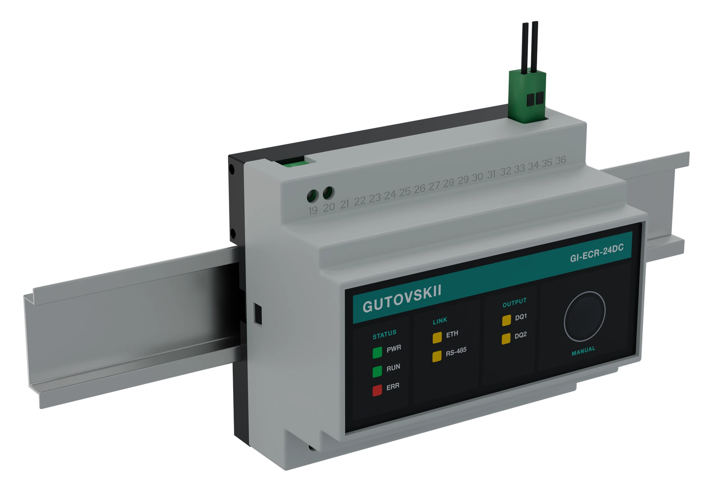
No wires inside — two side boards carry every signal.
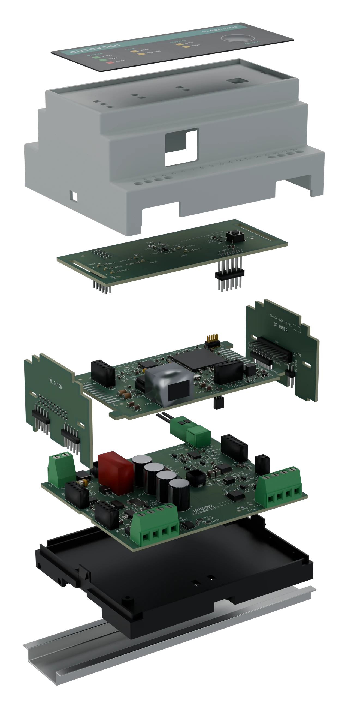
Teardrops, solid ground, tidy buses — straight from the fab files.
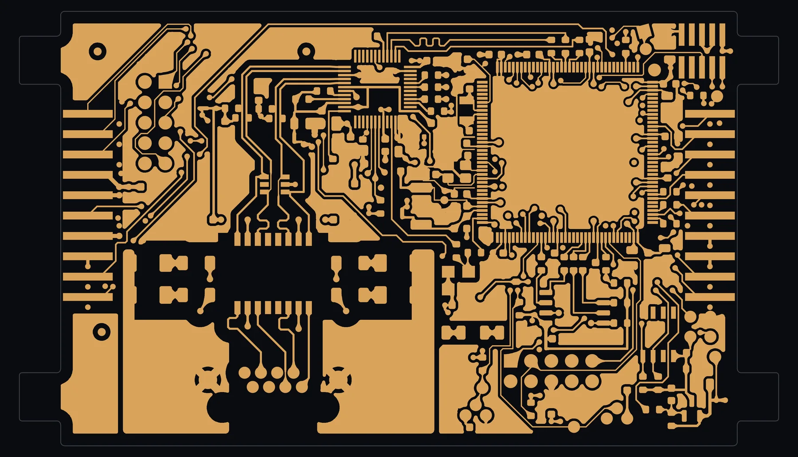
Fuse, 5 kW TVS, filter, reverse‑polarity diode, 600 µF hold‑up.
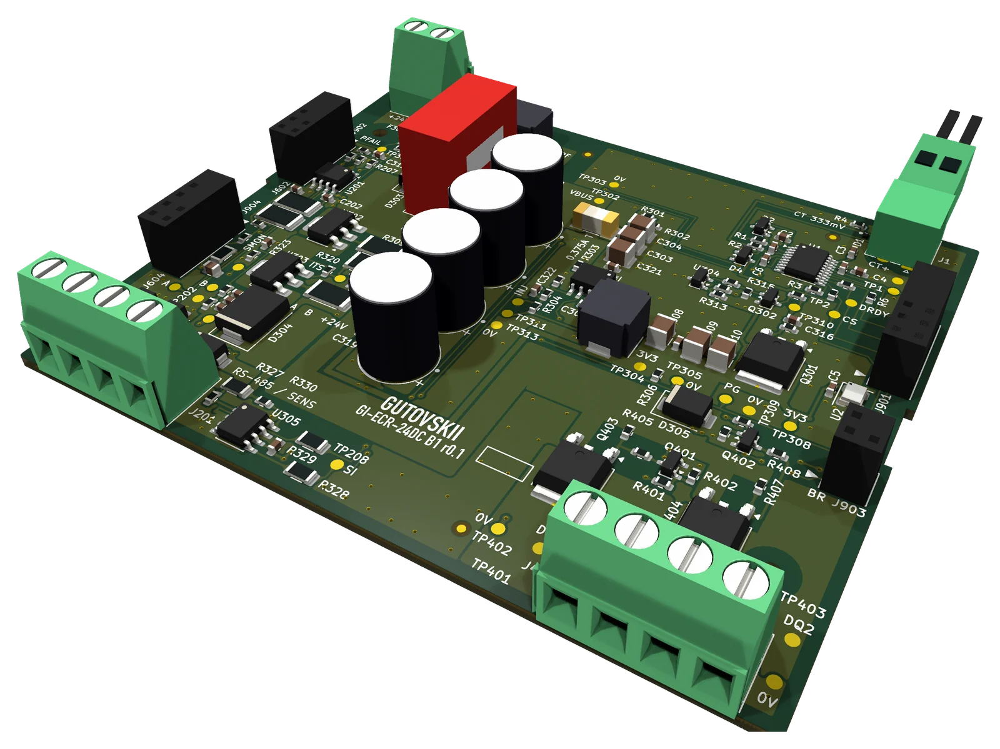
Four layers with two solid ground planes under the CPU and PHY.
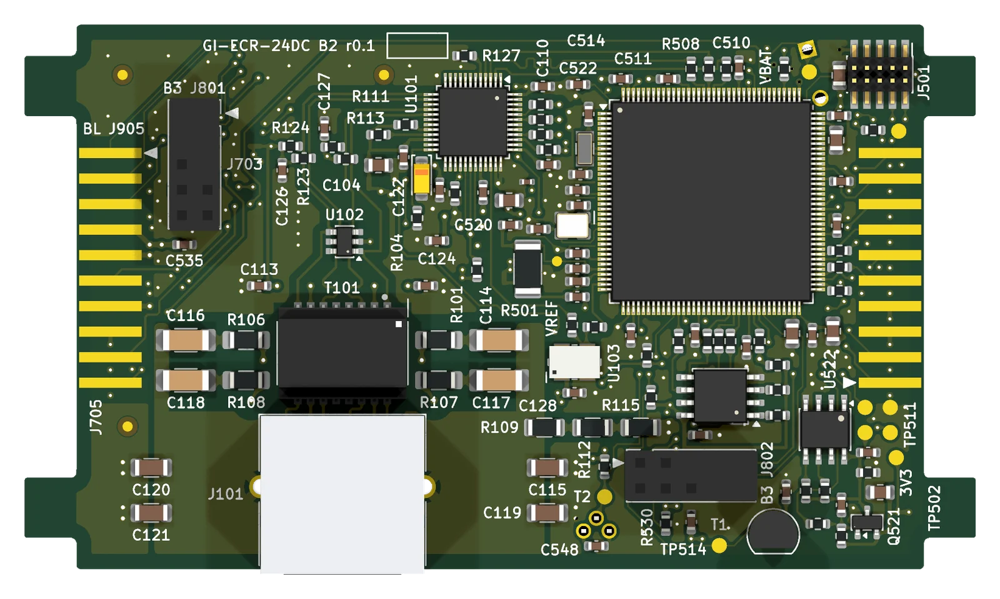
A printed film over a milled lid; the buzzer needs no hole.
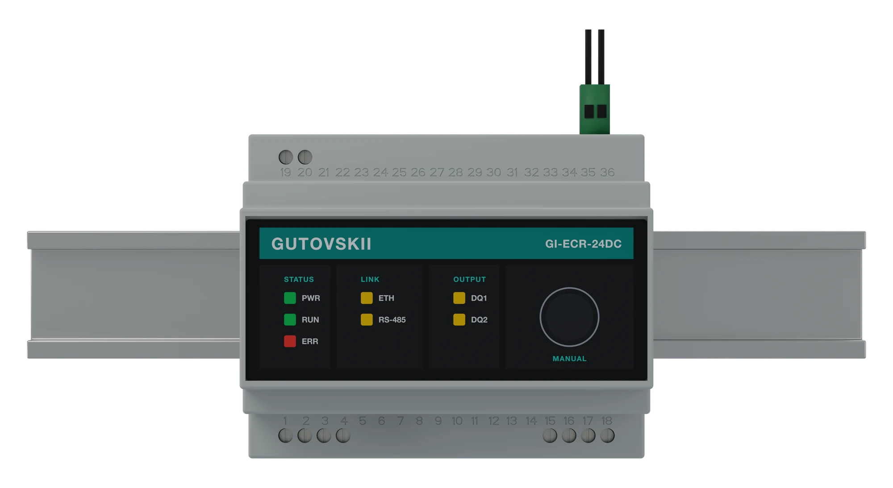
20.4–28.8 V · +24 V and 0 V only
Bernic 1050 · 105 × 86 mm
up to 480 MHz · 2 MB flash · 1 MB RAM
10/100 · MQTT with mTLS
2 × 0.25 A for 25 A relay coils
0.3 A sensor supply · up to 50 m
333 mV · 4000 samples/s
≥ 10 ms (PS2) · 23 ms calculated
Rendered from the real board files with every part model, inside the manufacturer’s housing model. Every mating connector pair lines up within 0.005 mm, every LED within its lid window.
Tinted LED windows, embossed key dome, glued into the lid recess.
Our milled openings: 7 LED windows, key hole, RJ45 window, wire windows, screwdriver holes.
ROHM LEDs, Omron B3F key, TDK buzzer; long Samtec TSW pins plug into board 2.
STM32H753, DP83848 Ethernet, RJ45, W25Q128JV, ATECC608B. The side boards BL / BR are soldered to its edge contacts and stand in the lid slots.
Phoenix MKDS screw terminals, current‑clamp plug, LMR38010 converter, hold‑up bank, Samtec SSW sockets for the side boards.
Board 1 rests on its ribs; the base snaps onto the rail.
Not part of the product.
Not shown: the DIN latch slider, the two board‑1 screws, cables. Housing from the manufacturer’s STEP, not a measured sample. Source: tools/showcase_3d.py, docs/showcase/img/module_parts.json.
The input stage follows the Siemens S7‑1200: fuse, surge suppressor, filter, reverse‑polarity protection and a 600 µF hold‑up bank. The outputs use the same transistor as the S7‑1215C.
Board 1 rests on the ribs of the housing base. Two side boards stand in the slots of the lid, carry boards 2 and 3 and pass the signals between them. No wires inside.
24 V input, 3.3 V converter, DQ outputs, RS‑485, current clamp.
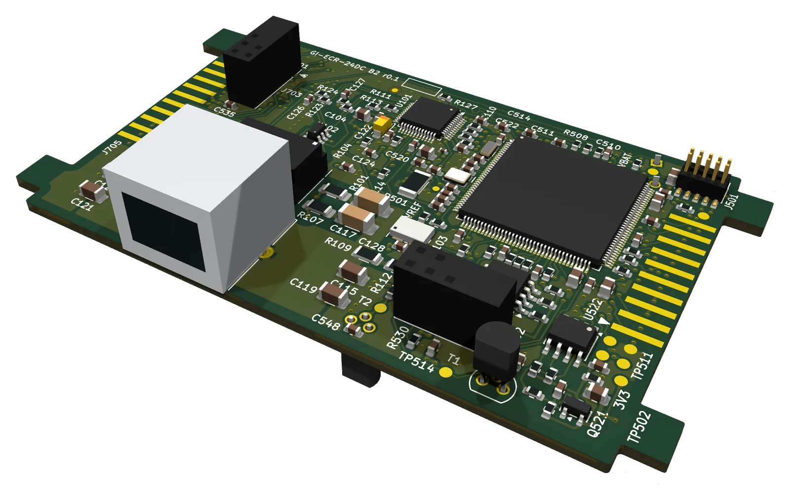
B2 · 4 layersSTM32H753, DP83848, 16 MB flash, secure element.
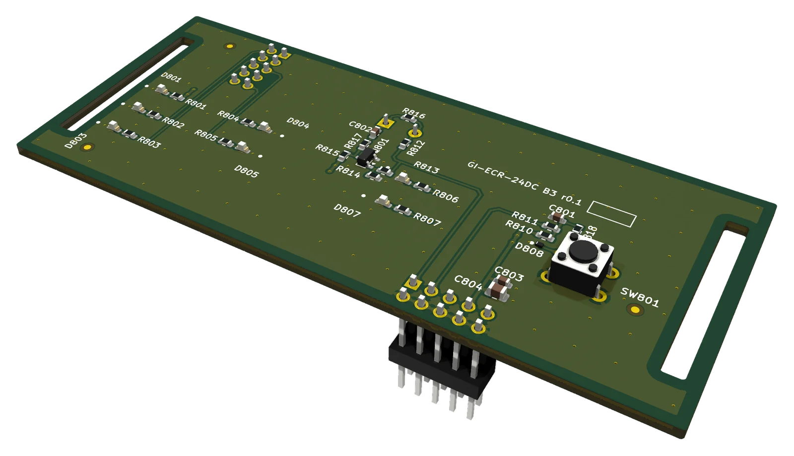
B3 · 2 layers7 LEDs, a key, a buzzer.
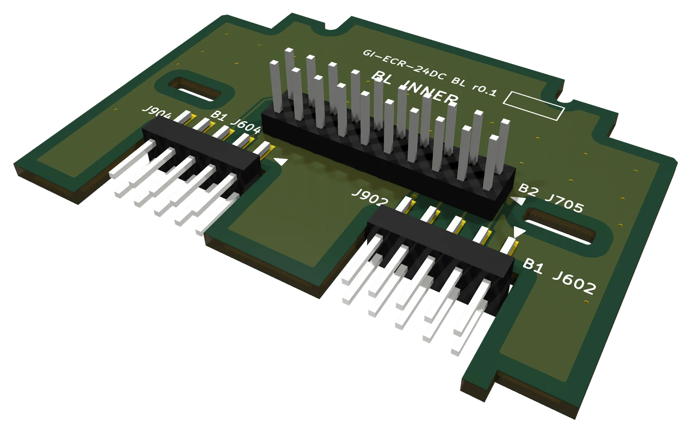
BL · 2 layersRS‑485, power‑fail, sensor supply, +3V3.
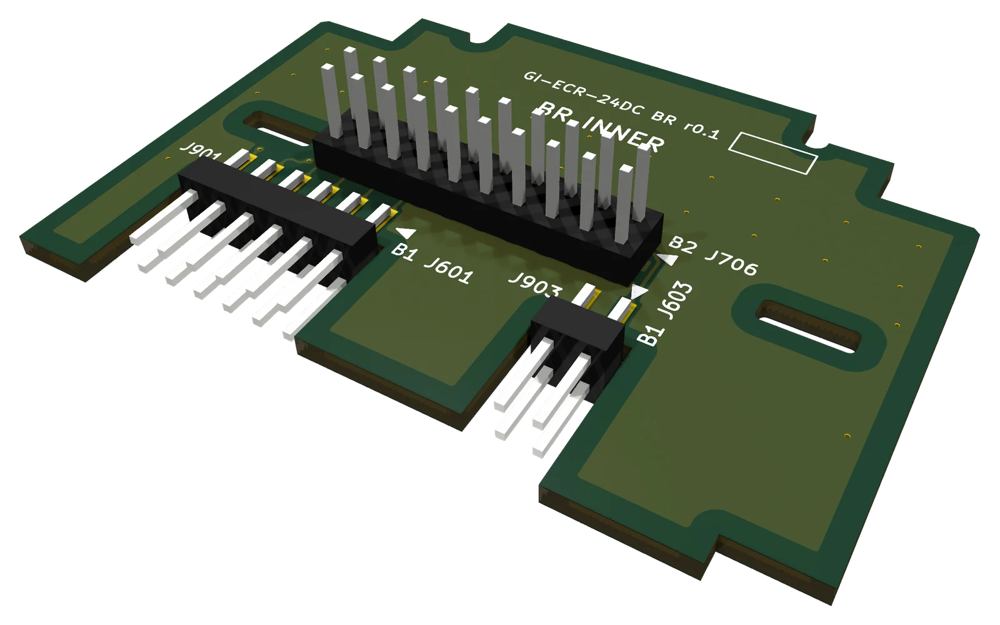
BR · 2 layersCurrent‑ADC SPI, output commands, power‑good.
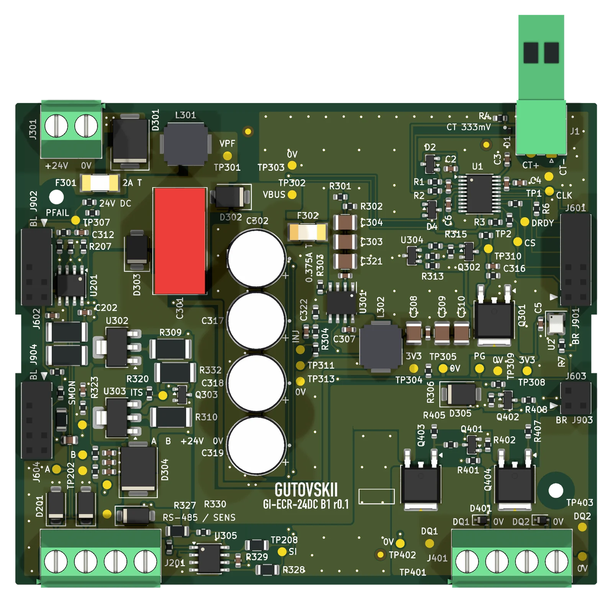
Everything that touches the field wiring lives here, on screw terminals with enlarged oval pads.
Four layers: parts and routing outside, two solid ground planes inside. A solid copper area under the CPU spreads its heat.
A printed PET film covers the milled lid. The LEDs shine through tinted windows, and the key sits under a raised dome.
Each wall plugs into board 1 from below, holds board 2 by its tabs and carries board 3 on its shoulders.
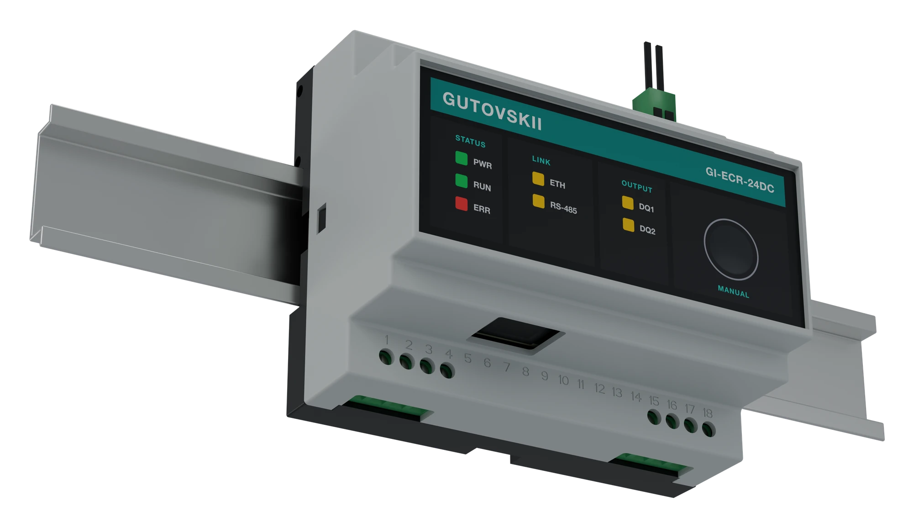
| Connector | Purpose | Limits |
|---|---|---|
| J301 +24 V / 0V | Module supply | 20.4–28.8 V; built‑in 2 A time‑lag fuse; a source above 250 VA needs an external fuse ≤ 4 A IEC 61131‑2 limited‑power circuit |
| J401 DQ1 · 0V · DQ2 · 0V | Two 24 V outputs for relay coils | 0.25 A per output, drop ≤ 0.7 V, cable up to 30 m no overload protection on board — external 0.5 A fuse, as with the S7‑1215C |
| J201 A · B · +24V_SENS · 0V | RS‑485 Modbus RTU (master) and sensor supply | TI THVD2410: ±70 V bus fault tolerance, up to 500 kbit/s; 120 Ω termination on board; up to 0.3 A for sensors |
| J1 CT− · CT+ | Current clamp with 333 mV output | ±1.2 V peak input; a 60 A clamp is not clipped up to 216 A instantaneous; lead up to 3 m |
| J101 RJ45 | Ethernet 10/100 | 1500 V AC 1 min cable isolation; cloud link and firmware update with roll‑back |
| J501 2 × 5, 1.27 mm | CPU debug and programming (SWD) | Inside the housing, ST‑LINK cable |
Sources: docs/01 §8, docs/13, docs/16, docs/04; pin‑out taken from the board 1 netlist.
The layers come straight from the fabrication files. The boards are drawn by generator scripts and never edited by hand. Teardrops at pad entries, solid ground, tidy buses.
Parts and routing; RMII and Ethernet pairs with designed impedance.
Solid 0 V plane under the L1 routing.
Second solid 0 V plane for the L4 routing.
Routing and power; every signal via has a 0 V via beside it.
Discrete parts only. Inside each block the parts are wired, and the margins of each sheet record the calculation: what was chosen and why.
No design rule was relaxed to make a board pass. No part sits under the body of another — checked in 3D.
Opus and Fable reviewed all five boards before ordering and every change after the audit. Where they disagreed, they converged on one decision.
TI, ST, Murata, TDK, YAGEO, Vishay, Panasonic, Littelfuse, Nexperia, Infineon, ROHM, Samtec, Winbond. Every part has an LCSC code, a manufacturer part number and a datasheet.
Calculations to IEC 61131‑2 (PLCs), IEC 61000‑4‑5 (surge), IEC 60664‑1 (clearances). Where a number comes from a calculation or a model, it says so.
Input, hold‑up bank and outputs follow the S7‑1200 and S7‑1215C, plus TI and ST evaluation boards.
The private key is generated inside the ATECC608B. Works with AWS IoT, Azure or your own MQTT broker.
All board‑to‑board connectors are tin‑plated Samtec catalogue parts. Tin is never mated with gold.
29 test points on board 1 and 10 on board 2. The converter has an injection point for a Bode plot.
≥ 0.2 mm on the board where IEC 61131‑2 asks for 0.04 mm, ≥ 1.6 mm between terminals.
No fire and no electric shock after any single fault.
The ground rule of the project. Every block has a table “fault → what happens → what limits it → result”. The device may break, but it must not become dangerous. Board and housing are UL94 V‑0 and do not sustain a flame.
Water heater and heating through external 25 A relays or contactors with 24 V coils. No 230 V on the board.
A clamp on the wire shows whether the pump or boiler fan started and how long it ran. A stuck output shows up too.
Polls and powers sensors on cables up to 50 m, outdoors included.
MQTT over mTLS: AWS IoT, Azure or your own broker. Firmware updates with roll‑back.
The key turns an output on for N minutes. The log goes to 16 MB of flash and the clock keeps running without power.
Red ERR LED and a buzzer of at least 70 dB(A).
Fabrication files for all five boards are complete and error‑free. No boards have been made yet. Reasons for the pause: the cost of two units (≈ $604 assembled by JLC, ≈ $411 hand‑assembled, before shipping and VAT) and parts that are out of stock today. Every number on this page comes from calculations and models, not from measurements.